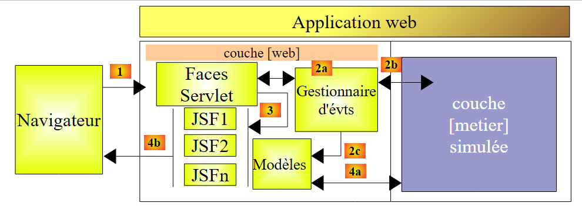
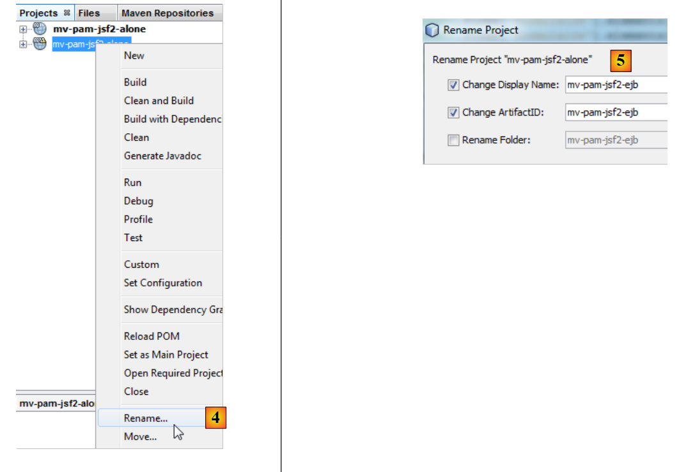
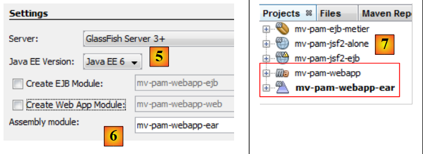
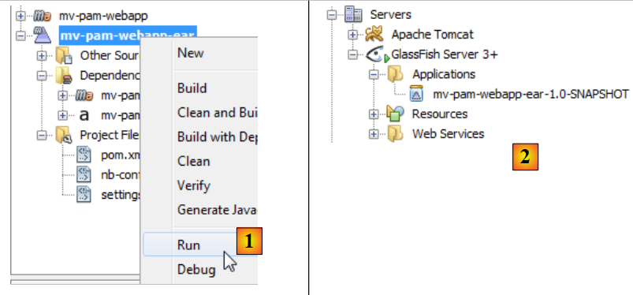

11. Versie 6 - Integratie van de weblaag in een drielaagse architectuur JSF / EJB
11.1. Architectuur van de applicatie
De architectuur van de vorige webapplicatie was als volgt:
 |
We vervangen de gesimuleerde laag [métier] door de lagen [métier, DAO, jpa] die in paragraaf 7.1 zijn geïmplementeerd door EJB:
 |
11.2. Het NetBeans-project van de weblaag
Het NetBeans-project voor webversie nr. 2 wordt verkregen door het vorige project te kopiëren:
 |
- [1]: het nieuwe project wordt gekopieerd en in het tabblad [Projects] geplakt,
- [2]: geef het een naam en stel de map in,
- [3]: het project is aangemaakt,
Het nieuwe project heeft dezelfde naam als het oude. We passen dit aan:
 |
- [4]: we hernoemen het project,
- [5]: we wijzigen de naam ervan, evenals die van artifactID.
We hoeven slechts enkele aanpassingen te doen om deze weblaag aan te passen aan de nieuwe omgeving: de gesimuleerde laag [metier] moet worden vervangen door de laag [metier, DAO, jpa] van de server die in paragraaf 7.1 is opgebouwd. Hiervoor doen we twee dingen:
- we verwijderen de pakketten [exception, metier, jpa] die in het vorige project aanwezig waren.
- om deze verwijdering te compenseren, voegen we aan de afhankelijkheden van het webproject het serverproject EJB toe dat in paragraaf 7.1 is gebouwd.
 |
- in [1] voegen we een afhankelijkheid toe aan het project,
- in [2] selecteren we het Maven-project van de laag [métier]. In [3] specificeren we het type en in [4] het bereik. Dit is provided om aan te geven dat deze (provided) door de werkomgeving aan de webmodule zal worden geleverd. We zullen straks zien dat deze door een bedrijfsapplicatie aan de webmodule wordt geleverd,
- in [5] is de afhankelijkheid toegevoegd.
Het bestand [pom.xml] ziet er dan als volgt uit:
<dependencies>
<dependency>
<groupId>${project.groupId}</groupId>
<artifactId>mv-pam-ejb-metier-dao-eclipselink</artifactId>
<version>${project.version}</version>
<scope>provided</scope>
<type>ejb</type>
</dependency>
<dependency>
<groupId>javax</groupId>
<artifactId>javaee-web-api</artifactId>
<version>6.0</version>
<scope>provided</scope>
</dependency>
</dependencies>
We kunnen nu de pakketten uit de laag [métier] verwijderen die niet langer nodig zijn:
 |
We moeten ook de code van de bean [Form.java] aanpassen:
public class Form {
public Form() {
}
// bedrijfslaag
private IMetierLocal metier=new Metier();
// formuliervelden
...
Op regel 7 werd de gesimuleerde laag [métier] geïnstantieerd. Voortaan moet deze verwijzen naar de daadwerkelijke laag [métier]. De vorige code wordt als volgt:
public class Form {
public Form() {
}
// bedrijfslaag
@EJB
private IMetierLocal metier;
// formuliervelden
Op regel 7 geeft de annotatie @EJB aan de servletcontainer, die de weblaag gaat uitvoeren, de opdracht om in het veld metier van laag 8 de EJB in te voegen, die de lokale interface IMetierLocal implementeert.
Waarom de lokale interface IMetierLocal in plaats van de interface IMetierRemote? Omdat de weblaag en de laag EJB in dezelfde JVM worden uitgevoerd:
 |
De klassen van de servletcontainer kunnen rechtstreeks verwijzen naar de EJB-klassen van de EJB-container.
Dat is alles. Onze weblaag is klaar. De transformatie verliep eenvoudig omdat we ervoor hadden gezorgd dat de [métier]-laag werd gesimuleerd door een klasse die voldeed aan de interface IMetierLocal, geïmplementeerd door de daadwerkelijke [métier]-laag.
11.3. Het NetBeans-project van de bedrijfsapplicatie
Een bedrijfsapplicatie maakt het mogelijk om de [web]-laag en de EJB-laag van een applicatie gelijktijdig op een applicatieserver te implementeren, respectievelijk in de servletcontainer en in de EJB-container.
We gaan als volgt te werk:
 |
- in [1] maken we een nieuw project aan
- in [2], we kiezen de categorie [Maven]
- in [3] kiezen we het type [Enterprise Application]
- in [4], geef je het project een naam
 |
- in [5] kiezen we Java EE 6
- naar [6]; een bedrijfsproject kan maximaal twee soorten modules bevatten:
- een EJB-module
- een webmodule
Tegelijk met het aanmaken van het bedrijfsproject kan worden gevraagd om deze twee modules aan te maken, die in het begin leeg zullen zijn. Een bedrijfsproject dient uitsluitend voor de implementatie van de modules die er deel van uitmaken. Verder is het een lege huls. Hier willen we het volgende implementeren:
- een bestaande webmodule [mv-pam-jsf2-alone]. Het is dus niet nodig om een nieuwe webmodule aan te maken.
- een bestaande module EJB ([mv-pam-ejb-metier-dao-eclipselink]). Ook hier is het niet nodig om een nieuwe aan te maken.
In [6] maken we een bedrijfsproject aan zonder modules. We zullen er later de web- en EJB-modules aan toevoegen.
- In [7] zijn twee Maven-projecten aangemaakt. Het bedrijfsproject is het project met de extensie ear. Het andere project is een bovenliggend Maven-project van het vorige. Daar zullen we ons niet mee bezighouden.
We voegen de webmodule en de module EJB toe aan het bedrijfsproject:
 |
- in [1], een nieuwe afhankelijkheid toevoegen,
- in [2], toevoeging van het project EJB [mv-pam-ejb-metier-dao-eclipselink]. Let op het type ejb,
- in [3], toevoeging van het webproject [mv-pam-jsf2-ejb]. Let op het type war.
Het bestand [pom.xml] ziet er dan als volgt uit:
<dependencies>
<dependency>
<groupId>${project.groupId}</groupId>
<artifactId>mv-pam-ejb-metier-dao-eclipselink</artifactId>
<version>${project.version}</version>
<type>ejb</type>
</dependency>
<dependency>
<groupId>${project.groupId}</groupId>
<artifactId>mv-pam-jsf2-ejb</artifactId>
<version>${project.version}</version>
<type>war</type>
</dependency>
</dependencies>
Voordat de bedrijfsapplicatie [mv-pam-webapp-ear] wordt geïmplementeerd, moet worden gecontroleerd of de database MySQL [dbpam_eclipselink] bestaat en gevuld is. Zodra dit is gebeurd, kunnen we de bedrijfsapplicatie [mv-pam-webapp-ear] implementeren:
 |
- in [1] is de bedrijfsapplicatie geïmplementeerd
- in [2]; de bedrijfsapplicatie [mv-pam-webapp-ear] is succesvol geïmplementeerd.
In de browser verschijnt de volgende pagina:
 |
- in [1], de opgevraagde URL
- in [2] is de lijst met medewerkers gevuld met de gegevens uit tabel [Employes] van de database dbpam.
De lezer wordt verzocht de tests van webversie nr. 1 opnieuw uit te voeren. Hier volgt een voorbeeld van de uitvoering: